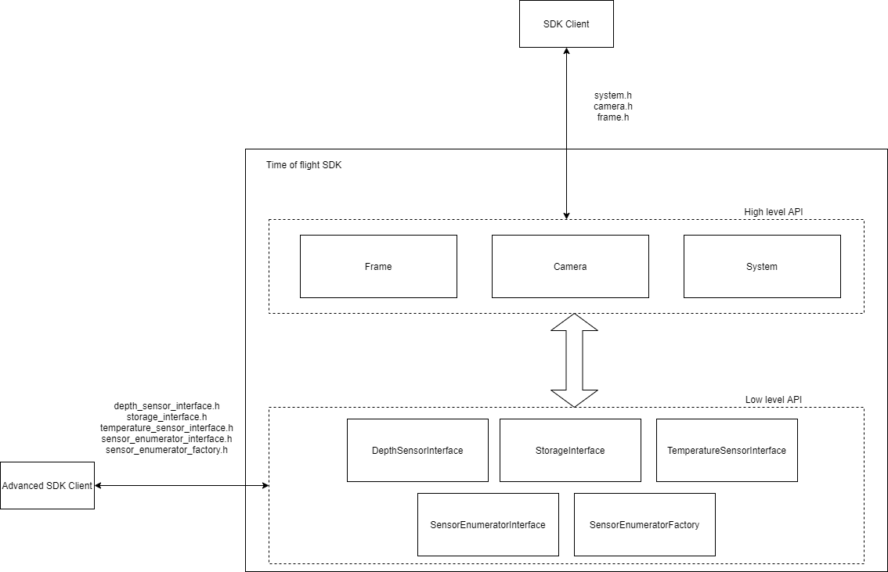
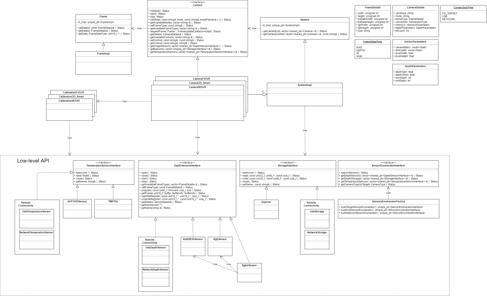
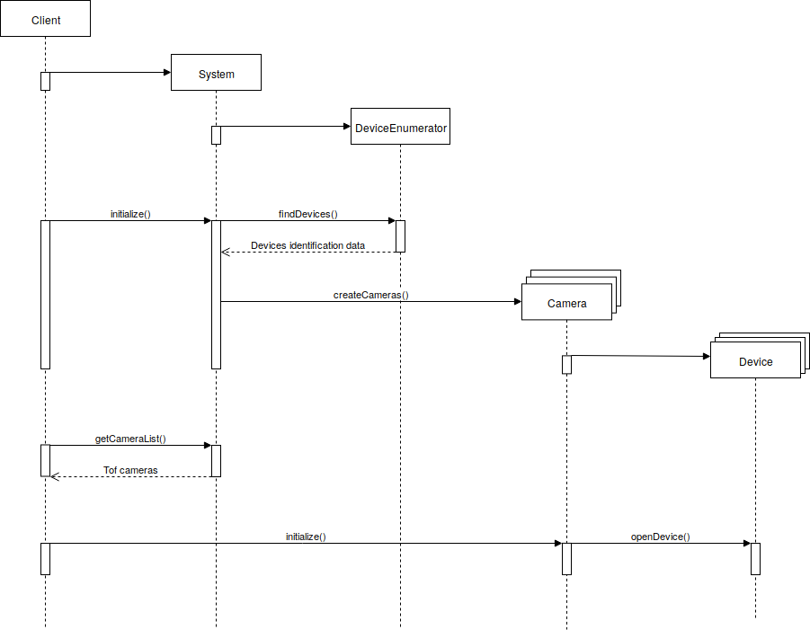
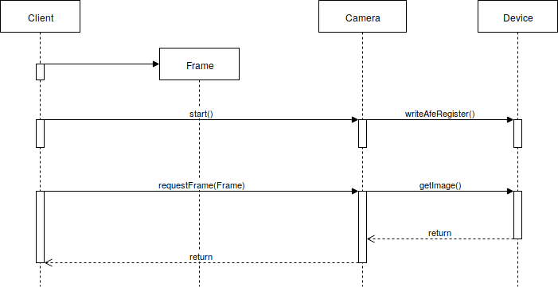

|
Time-of-Flight-SDK
|
Aditof SDK is licensed under the GNU General Public License v2.0.
The Aditof SDK consist of two layers.
A high level API allows clients to easily grab a camera object, configure it and request frames. There are three main interfaces to accomplish this. The System object is responsible for detecting cameras that are connected and for the construction and owning of Camera objects. The Camera object is associated to the physical camera and makes possible the communication with the hardware. Frames can be retrieved from the Camera by using the Frame object which behaves as a data container and also holds information about the data it contains such as frame resolution.
The other layer is the low level API which exposes the DepthSensorInterface, StorageInterface and TemperatureSensorInterface through which low level operations can be made to the camera hardware. For example one can read or write the internal registers of the hardware or read it's internal temperature.
A top level overview of the Aditof SDK consisting of the high level API and low level API: 
The class diagram add more details on top of what the top level diagram describes.
The System, Camera and Frame use the pimpl (pointer to implementation) idiom which provides some advantages such as helping achieve binary compatibility. The DepthSensorInterface, StorageInterface, TemperatureSensorInterface and SensorEnumeratorInterface mark the invisible line between high level and low level API. The DepthSensorInterface, StorageInterface and TemperatureSensorInterface abstract over the connection type made with the hardware thus keeping the implementation specifics hidden from the client code (high level layer or external client code). The responsibility of the SensorEnumeratorInterface is to detect any hardware that is compatible with Aditof SDK.
The sequence diagrams show the order in which calls need to be made to achieve a result and how the calls are propagated throughout the entire SDK.
The initialization sequence shows what needs to be done in order to initialize System and Camera before doing any other operation on them. 
The acquire frame sequence shows how a frame is obtained and how the calls propagate down the stack towards the hardware. 
The below code snipped shows an example of how the Aditof SDK can be used to get a frame from one camera.
1.8.15